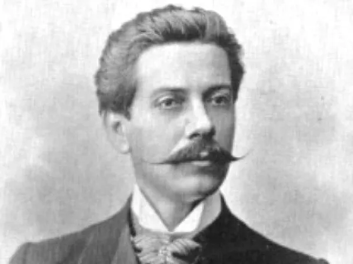
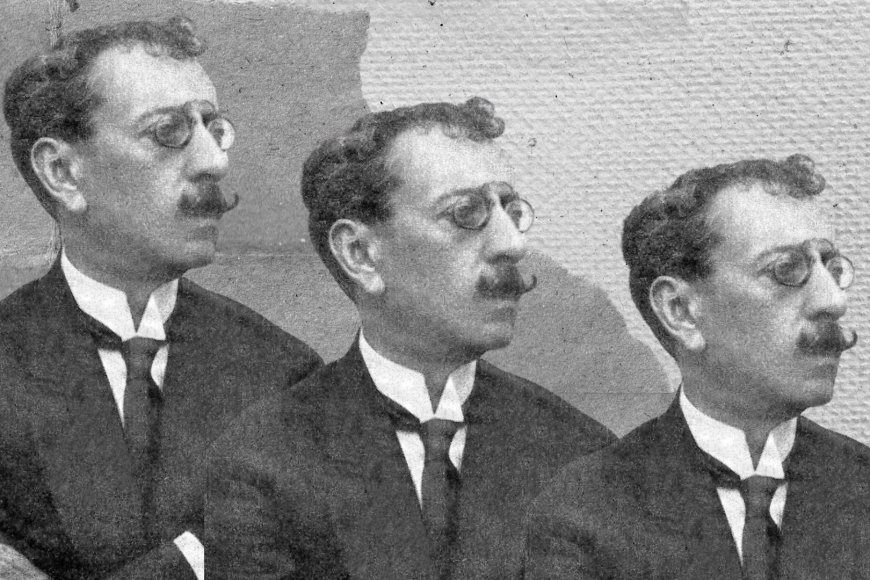

Contexto histórico
O movimento literário surgiu na mesma época do Realismo e do Naturalismo, no final do século XIX, com sua origem sendo na França. O Parnasianismo é supositório ao Realismo e o Naturalismo, valorizando o positivismo e a ciência acima de qualquer coisa, fatos históricos objetos e paisagens, com forte descrição visual. No Brasil, o movimento começou a partir de 1880 e teve maior destaque do que teve na Europa, e só aqui teve características como a subjetividade e o nacionalismo.
Características do Parnasianismo
O Parnasianismo foi um movimento contemporâneo, assim como o Realismo e o Naturalismo, porém, agora com foco na poesia. São valorizados o vocabulário culto, os sonetos, métrica, a racionalidade e a perfeição na escrita. A descrição das coisas é uma característica chave do Parnasianismo, assim como a objetividade, a impessoalidade, o uso de algumas figuras de linguagem e o preciosismo. Podemos ver as características citadas como a descritividade e o vocabulário culto nesse exemplo:
Estranho mimo aquele vaso! Vi-o,
Casualmente, uma vez, de um perfumado
Contador sobre o mármor luzidio,
Entre um leque e o começo de um bordado.
Fino artista chinês, enamorado,
Nele pusera o coração doentio
Em rubras flores de um sutil lavrado,
Na tinta ardente, de um calor sombrio.
Mas, talvez por contraste à desventura,
Quem o sabe?... de um velho mandarim
Também lá estava a singular figura.
Que arte em pintá-la! A gente acaso vendo-a,
Sentia um não sei quê com aquele chim
De olhos cortados à feição de amêndoa."
• Descritividade
• Racionalidade
• Linguagem culta
• Preferência por sonetos
• Preocupação com métrica
• Impessoalidade
• Preciosismo
Autores e obras
Alberto de Oliveira
Alberto de Oliveira nasceu em Saquarema, no estado do Rio de Janeiro, começou sua vida acadêmica na medicina, a qual logo abandonou e começou a trabalhar de farmacêutico, posteriormente nomeado oficial de gabinete, professor e diretor geral da Instrução Pública. Escreveu poemas que o fizeram ser um dos principais nomes no Parnasianismo, como o usado no exemplo acima, chamado Vaso chinês.

Olavo Bilac
Olavo Braz Martins dos Guimarães Bilac nasceu no estado do Rio de Janeiro, cursou direito e medicina, sem concluir nenhuma. Posteriormente trabalhou como inspetor de escola e jornalista, sua primeira obra a ser publicada foi Poesias, em 1888, seguindo os moldes parnasianos.

Segue uma de suas obras, Via Láctea:
Perdeste o senso, e eu vos direi, no entanto
Que, para ouvi-las, muita vez desperto
E abro as janelas, pálido de espanto
E conversamos toda a noite, enquanto
A via-láctea, como um pálio aberto
Cintila; e, ao vir do Sol, saudoso e em pranto
Inda as procuro pelo céu deserto
Direis agora: Tresloucado amigo
Que conversas com elas? Que sentido
Tem o que dizem, quando estão contigo?
E eu vos direi: Amai para entendê-las!
Pois só quem ama pode ter ouvido
Capaz de ouvir e de entender estrelas